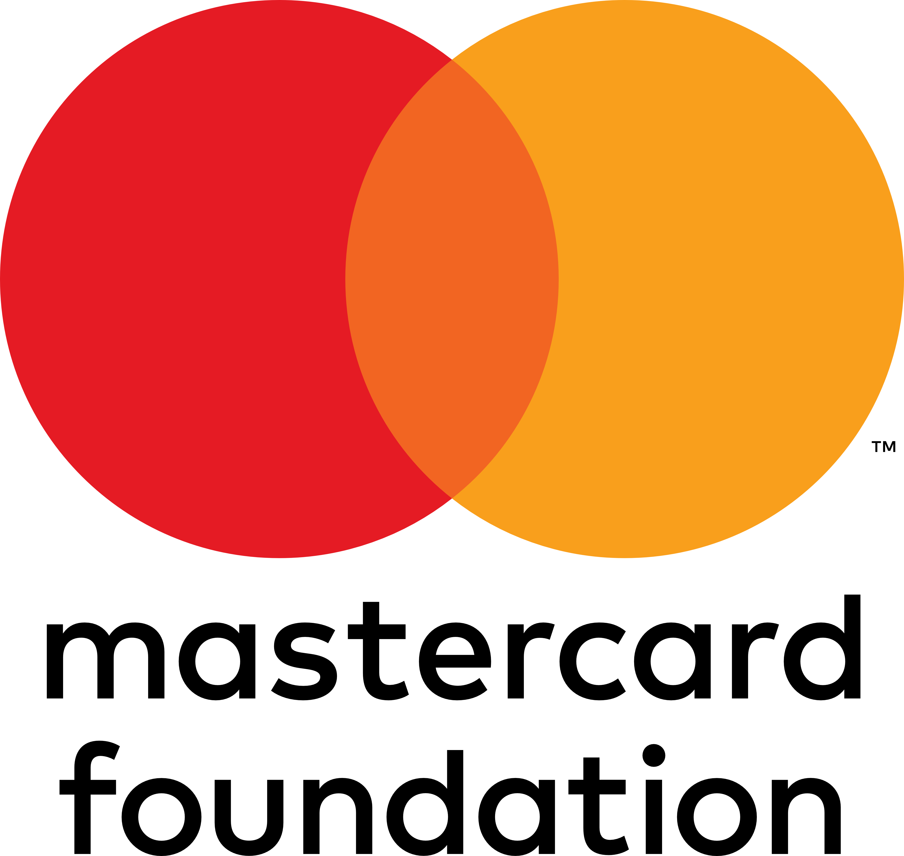

The Foundation's brand, inside the experience
Not a logo on a report. Not a mention in an annual review. The Foundation's name appears at the moment of deepest learning, when a student is fully immersed in Kenya's story.
In 1959, Tom Mboya persuaded Geoffrey Griffin to build a school for Nairobi's street children. Starehe Boys Centre opened with 60 boys, a borrowed building, and a radical idea: that poverty should never determine a child's future...
"Supported by Mastercard Foundation"
Every stop of an education trail carries the Foundation's name. Students follow the story from stop to stop, deeply engaged. The Foundation is the name standing beside their learning. Not interrupting. Present.
"Young Africa Works x Our Kenya"
The Foundation owns the Youth & Education knowledge domain. When students explore how Kenya's education system connects to employment, entrepreneurship, and innovation, the Foundation's name is the one they see.

Bring Kenya's History to Your Classroom
Free, curriculum-aligned resources for CBC and 8-4-4. Story trails, knowledge graphs, and audio narration designed for student engagement. Built on 7,796+ source-verified articles.
Request a Teacher Guide"Our Kenya for Schools"
A dedicated outreach landing page connecting teachers and students to curriculum-aligned history resources. Free. Accessible. Branded as a Young Africa Works initiative. The Foundation's name on every teacher guide and classroom resource.